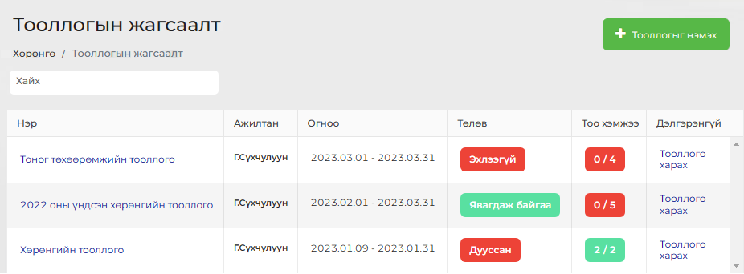
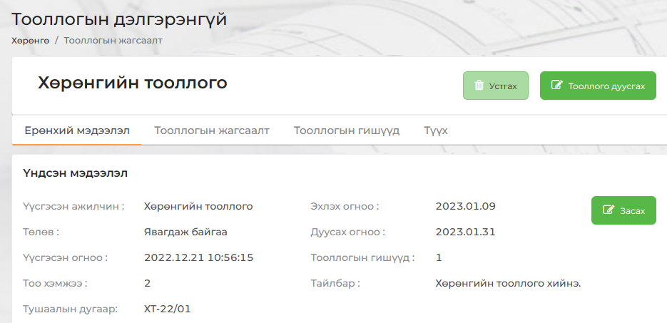
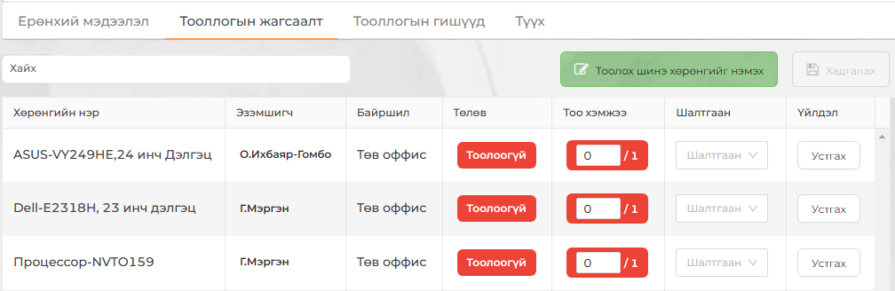
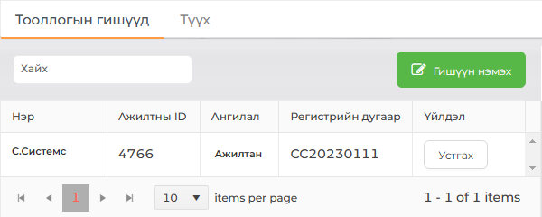
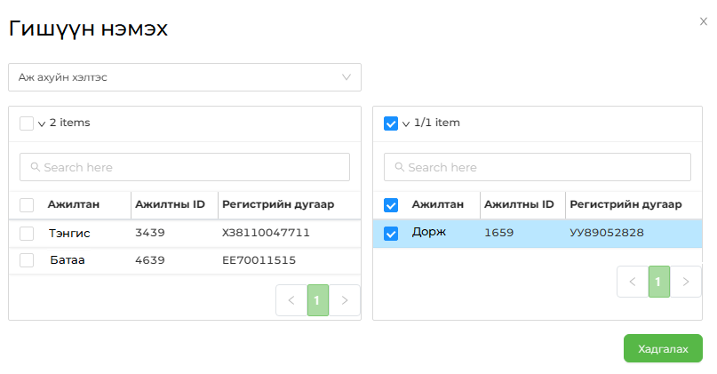
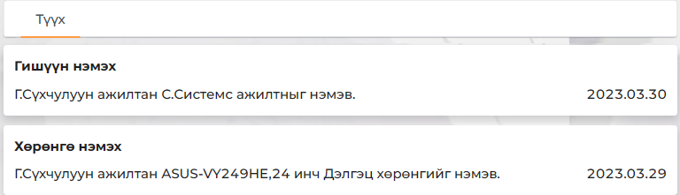

| Санамж:
Дууссан төлөвтэй тооллогын хувьд бүх үйлдлүүдийг хийх боломжгүй болох буюу товчлуурууд идэвхгүй төлөвт орно. |


| Санамж:
Тооллого хийхдээ Тоо хэмжээ талбарт тоо ширхэгийг оруулж өгч, Хадгалах товчийг дарна. |


